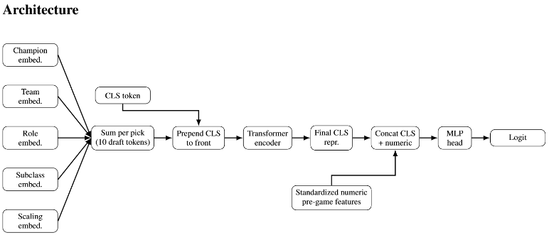
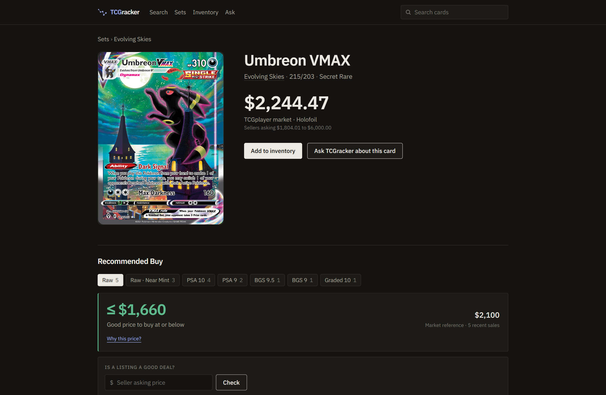

Projects
A few of the things I've been building lately. Most of them start the same way — I run into something I wish existed and (attempt) to make it myself.
League of Legends Pre-Game Win Probability Estimator
A model that estimates each team's chance of winning before the game even loads in.

Champion select ends, the loading screen comes up, and everyone in the lobby has already made up their mind about whether the game is winnable. I wanted to know how much of that gut feeling is actually justified. And so I built a model that looks at the ten players and the two team compositions, and assigns the win probabilities before any gameplay.
The data comes from Diamond+ ranked games across several regions, pulled through the Riot Games API. The tricky part is that a draft isn't just ten independent picks — champions matter because of how they fit together, so the model learns its own sense of each champion's identity (its role, its style, scaling, etc.) and reads the draft as a whole rather than as a list. That gets combined with what's known about the players themselves (e.g. winrate) to produce the final number.
For proper practice and evaluation I also compared the transformer to simpler baseline models.
TCGracker
A trading card market intelligence platform: exact card versions, comparable sales, explainable buy prices, and a Claude assistant that can't make numbers up.

I got into the hobby this summer, and after vending at a few events I realized that the current “standard,” Collectr, is… unsatisfactory. I noticed that with most cards, to make sure I had a fair comp, I would first check Collectr, then TCGPlayer, then eBay last sold. And then an epiphany… what is even the point of step 1 here if it's so unreliable that I feel the need to check two other sources? And so me and my best friend (Claude) tapped in.
What started as a price lookup grew into a full local platform: a 21,000-card catalog linked to the exact TCGplayer version each card trades as, stored price history and eBay sales, a hybrid search engine, an explainable Recommended Buy price, a vendor inventory, and a tool-calling assistant whose answers are verified by code before they're shown. The source is private, so I wrote up the design, the numbers and the screenshots on a dedicated page.
- Search that resolves messy queries to a card and its market versions, and says what it couldn't decide.
- A buy price built from recent eBay sales, grouped so you're only comparing categorically the same card, e.g., same condition/grade, same edition, same printing.
- A Claude assistant over the same data, with a grounding check that re-verifies every figure it states.
- Inventory tracking: cost basis, market value and unrealized gain/loss per holding.